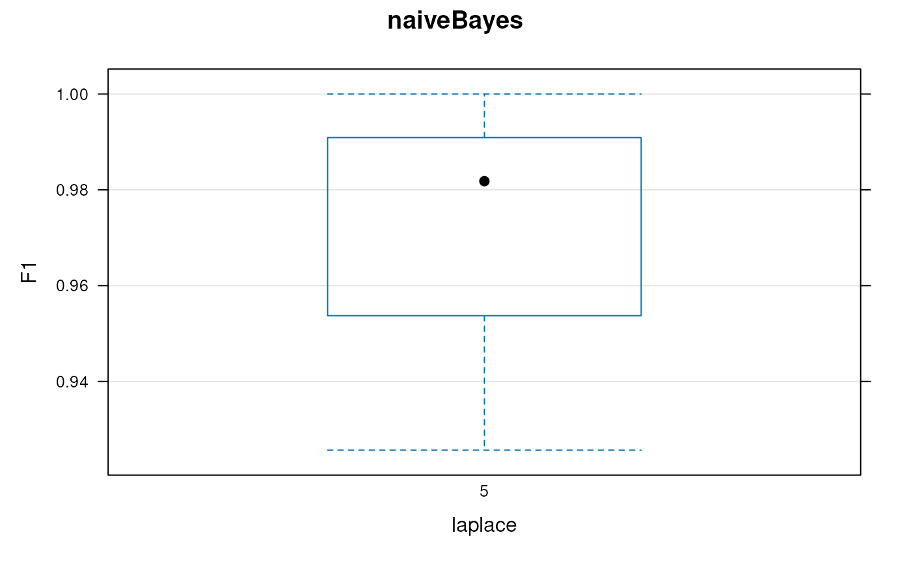
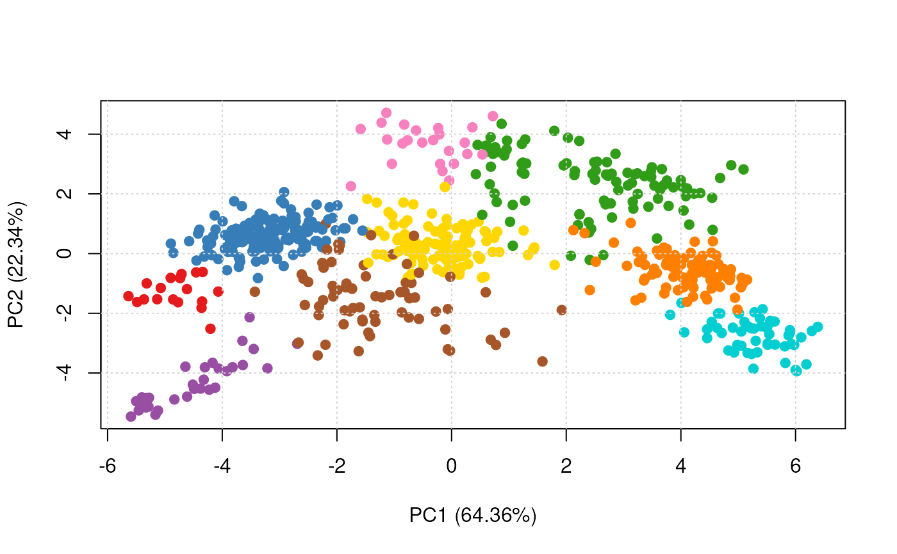

Classification using the naive Bayes algorithm.
nbClassification(object, assessRes, scores = c("prediction", "all",
"none"), laplace, fcol = "markers", ...)| object | An instance of class |
|---|---|
| assessRes | An instance of class
|
| scores | One of |
| laplace | If |
| fcol | The feature meta-data containing marker definitions.
Default is |
| ... | Additional parameters passed to
|
An instance of class "MSnSet" with
nb and nb.scores feature variables storing the
classification results and scores respectively.
Laurent Gatto
library(pRolocdata)
data(dunkley2006)
## reducing parameter search space and iterations
params <- nbOptimisation(dunkley2006, laplace = c(0, 5), times = 3)
#>
|
| | 0%
|
|===== | 7%
|
|========= | 13%
|
|============== | 20%
|
|=================== | 27%
|
|======================= | 33%
|
|============================ | 40%
|
|================================= | 47%
|
|===================================== | 53%
|
|========================================== | 60%
|
|=============================================== | 67%
|
|=================================================== | 73%
|
|======================================================== | 80%
|
|============================================================= | 87%
|
|================================================================= | 93%
|
|======================================================================| 100%
params
#> Object of class "GenRegRes"
#> Algorithm: naiveBayes
#> Hyper-parameters:
#> laplace: 0 5
#> Design:
#> Replication: 3 x 5-fold X-validation
#> Partitioning: 0.2/0.8 (test/train)
#> Results
#> macro F1:
#> Min. 1st Qu. Median Mean 3rd Qu. Max.
#> 0.9818 0.9818 0.9818 0.9818 0.9818 0.9818
#> best laplace: 0 5
plot(params)

f1Count(params)
#>
#> 0 5
#> 1 2
levelPlot(params)
getParams(params)
#> laplace
#> 0
res <- nbClassification(dunkley2006, params)
getPredictions(res, fcol = "naiveBayes")
#> ans
#> ER lumen ER membrane Golgi Mitochondrion PM
#> 18 175 98 98 123
#> Plastid Ribosome TGN vacuole
#> 52 70 24 31
#> MSnSet (storageMode: lockedEnvironment)
#> assayData: 689 features, 16 samples
#> element names: exprs
#> protocolData: none
#> phenoData
#> sampleNames: M1F1A M1F4A ... M2F11B (16 total)
#> varLabels: membrane.prep fraction replicate
#> varMetadata: labelDescription
#> featureData
#> featureNames: AT1G09210 AT1G21750 ... AT4G39080 (689 total)
#> fvarLabels: assigned evidence ... naiveBayes.pred (11 total)
#> fvarMetadata: labelDescription
#> experimentData: use 'experimentData(object)'
#> pubMedIds: 16618929
#> Annotation:
#> - - - Processing information - - -
#> Loaded on Thu Jul 16 22:53:08 2015.
#> Normalised to sum of intensities.
#> Added markers from 'mrk' marker vector. Thu Jul 16 22:53:08 2015
#> Performed naiveBayes prediction (laplace=0) Thu Jul 22 14:51:20 2021
#> Added naiveBayes predictions according to global threshold = 0 Thu Jul 22 14:51:20 2021
#> MSnbase version: 1.17.12
getPredictions(res, fcol = "naiveBayes", t = 1)
#> ans
#> ER lumen ER membrane Golgi Mitochondrion PM
#> 14 45 69 61 46
#> Plastid Ribosome TGN unknown vacuole
#> 43 35 13 336 27
#> MSnSet (storageMode: lockedEnvironment)
#> assayData: 689 features, 16 samples
#> element names: exprs
#> protocolData: none
#> phenoData
#> sampleNames: M1F1A M1F4A ... M2F11B (16 total)
#> varLabels: membrane.prep fraction replicate
#> varMetadata: labelDescription
#> featureData
#> featureNames: AT1G09210 AT1G21750 ... AT4G39080 (689 total)
#> fvarLabels: assigned evidence ... naiveBayes.pred (11 total)
#> fvarMetadata: labelDescription
#> experimentData: use 'experimentData(object)'
#> pubMedIds: 16618929
#> Annotation:
#> - - - Processing information - - -
#> Loaded on Thu Jul 16 22:53:08 2015.
#> Normalised to sum of intensities.
#> Added markers from 'mrk' marker vector. Thu Jul 16 22:53:08 2015
#> Performed naiveBayes prediction (laplace=0) Thu Jul 22 14:51:20 2021
#> Added naiveBayes predictions according to global threshold = 1 Thu Jul 22 14:51:20 2021
#> MSnbase version: 1.17.12
plot2D(res, fcol = "naiveBayes")
